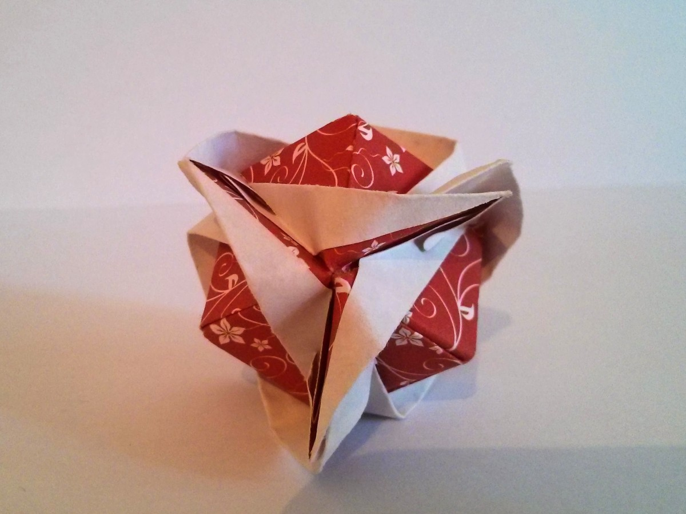

 6 Module Clover Kasudama
I've been wondering for a while if it is possible to build a clover kasudama model out of 6 modules. In the website, where I've found instructions for folding, it was written that this model can be assembled out of 12 and 30 modules. 6 module clover kasudama model was not mentioned.
Theoretically, every module for clover kasudama is a variation of Sonobe module, and in Wikipedia it is written that out of 6 Sonobe units one should be able to assemble a cube. My curiosity forced me to check if this rule hold also for clover kasudama model modules.
So, I've tried to build it. And success. Paradoxically, I've got a simple 3-leaf clover, which doesn't mean success unlike the 4-leaf clover, but still I feel good about it. Yes, it is a cube, in cube views you can imagine a cube where every corner is surrounded by kind of ornamented leaves. Math is math, what once was proved is doable.
My rule to assemble this model is to finish a circle with 3 triangles. Another tip would be to use clips (the smaller clips the better). Clips are useful because model is fragile during the assembly. But not particularly fragile. Therefore, I guess that in the original istructions 6 module clover kasudama wasn't mentioned not because of fragility - original instructions was for a ball while out six modules one gets a cube, which is not a ball. Logical.
Another cool thing about this model is that when you're making 30 mudule model, out of 5 cm paper squares, which are cut out of 15 cm paper, you can fold those six modules from the remaining paper.
For future work, probably I'll try to assemble a model out of 90 modules.